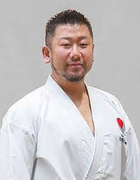

¿Qué es el "kata"?
.webp)
El kata es un conjunto de movimientos de defensa y contrataques, es decir, es una simulacion de una pelea, pero contra varias personas. En los torneos, en este se cpmpite de manera individual y en equipos.
¿Qué es el "kumite"?
El kumite es basicamente, el enfrentamiento mano a mano con otro practicante del mismo arte y es una forma de poner en practica los conocimientos adquiridos de la base del karate. El kumite, tiene diferentes formas, digamos que se divide en tres formas de practicarlo: Esta el "ippon kumte", es el mas basico de todos, es donde se implementan las defensas y contraateques mas basicos. El "jyiu-ippon kumite", este es un poco mas avanzado y es conciderado el "semi libre" ya que requiere mas movimiento que en el anterior, pero las tecnicas sigue siendo las mismas. Y por ultimo esta el "jiyu kumite", o mas conocido como "kumite libre", es el mas avanzado, en el que simplemente los dos practicantes, pelean a dos puntos, o sea que basicamente el que le pega al otro dos veces gana, lo que destaca de este tipo kumite es la poca tecnica con la que se ataca y se defiende.
Los "cinturones"
Los cinturones, son una manera de identificar el nivel de cada practicante. Estos estan ordenados de la siguiente manera: Blanco, Amarillo, Naranja, Verde, Celeste, Violeta, Azul, Marron y Negro. Los cinturones del negro para abajo de denominan como "kyu" y del negro para arriba se denominan "dan".